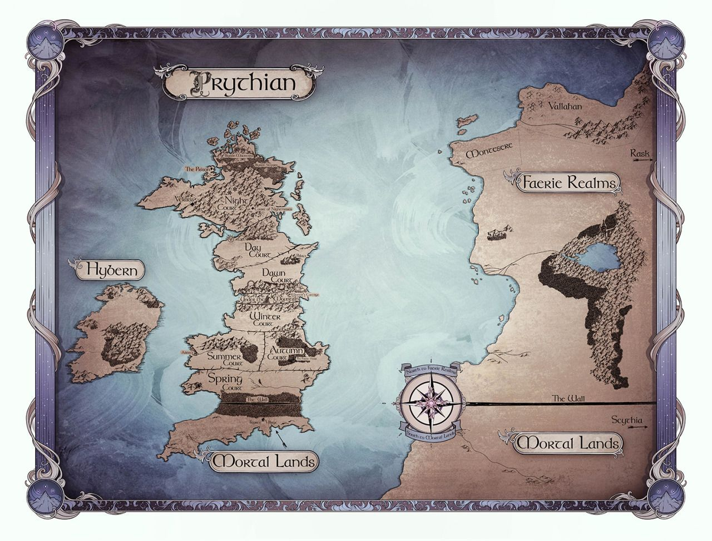

A Court Of Thorns And Roses - Tüskék és Rózsák Udvara sorozat
- 1. - A Court of Thorns and Roses - Tüskék és Rózsák Udvara
- 2. - A Court of Mist and Fury - Köd és harag udvara
- 3. - A Court of Wings and Ruin - Szárnyak és pusztulás udvara
- 3,5. - A Court of Frost and Starlight - Fagy és csillagfény udvara
- 4. - A Court of Silver Flames - Ezüst lángok udvara
A tizenkilenc éves Feyre az erdőben vadászva megöl egy farkast, ám nem sokkal ezután egy másik szörnyeteg bukkan fel, aki jóvátétel gyanánt magával hurcolja egy olyan baljós és mágikus vidékre, amit a lány csak a legendákból ismer. Feyre hamar rájön, hogy fogvatartója valójában nem állat, hanem Tamlin, egyike azoknak a halálos és halhatatlan tündéreknek, akik egykor a világ felett uralkodtak. Tamlin birtokán Feyre jéghideg gyűlölete forró szenvedéllyé alakul át, és ez az érzés felperzsel minden olyan hazugságot és figyelmeztetést, amit neki a tündérek csodálatos, ámde veszedelmes világáról korábban mondtak. Azonban a tündérek birodalma felett egyre nő egy ősi, gonosz árnyék és Feyre-nak kell megtalálnia a módját, hogy feltartóztassa… vagy örök pusztulásra ítélje Tamlint és világát. A Kristen Cashore és George R. R. Martin rajongók imádni fogják. Szexi, akciódús sorozat első kötete.
Személy szerint ez volt az első könyv/sorozat, amit az írónőtől olvastam. Akik szeretik a csavaros, érzéki, akciódús fantasy könyveket, imádni fogják.
A sorozat főszereplője egy igazi példakép. Feyre egy szegénysorból való lány, aki minden nehézség ellenére is bátor. Megvan a magához való esze, ám egyszercsak a tündérek világába csöppen, ami cseppet sem kegyes - főleg nem az emberekkel...
— Azokra igyunk, Rhys, akik kívánnak valamit, ha a csillagokra
néznek.
A tekintete olyan átható volt, hogy nem is értettem, miért pirultam
el Tarquin miatt. Odakoccintotta a poharát az enyémhez.
— A csillagokra, mert meghallgatnak bennünket, és az álmokra, amik
teljesülnek.
Köd és Harag Udvara - 34. fejezet
– Mindent megszerettél magadban? A jót is, és a rosszat is? A
világos és a sötét oldaladat?
Mosolyogtam.
– Főleg a sötétet.
Szárnyak és Pusztulás Udvara - 702. oldal, 69.fejezet
Itt Van Prythian, Hybern, és a Nagy Szárazföld térképe:
